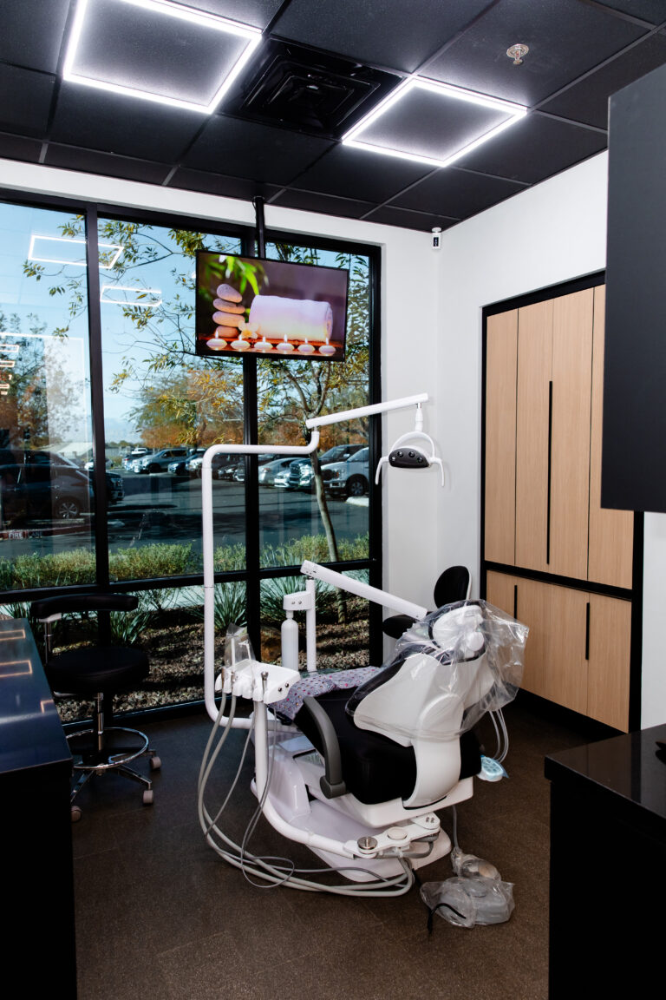
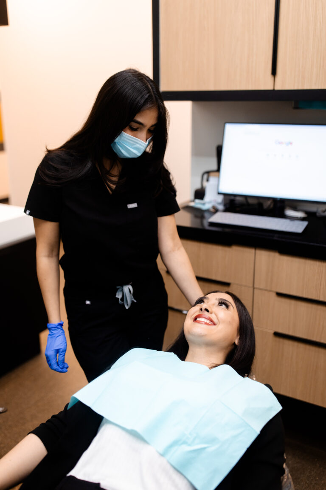
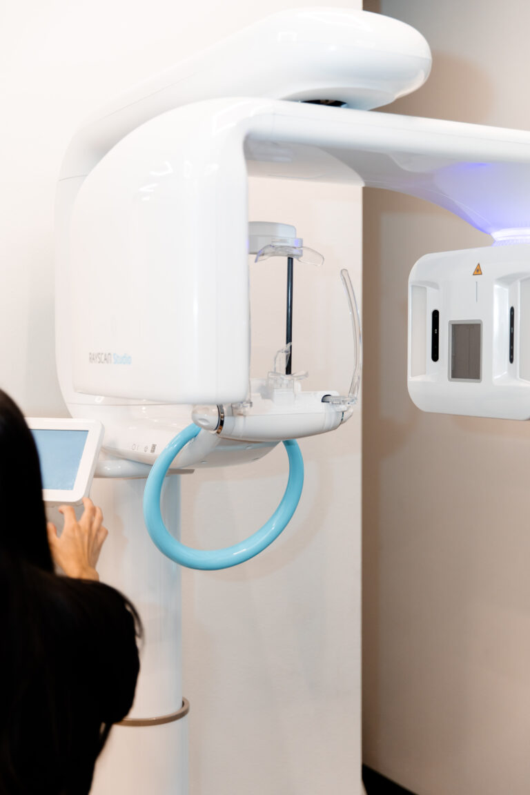

Chew on that side without thinking about it.
A crown covers the tooth and holds it together, so you are not testing it every meal.

A porcelain crown rebuilds a damaged or heavily filled tooth to its full shape, strength and appearance.
A tooth that has been filled several times is mostly filling.
The walls left around it are thin, and thin walls flex when you bite down.
A crack can announce itself as a twinge on one side, on something hard or cold. It can also give no warning you would notice.
Our own crowns page lists broken or fractured teeth among the reasons a crown is needed, fetched 30 July 2026.
A crown is the step that comes before that, while the root is still sound.
Coverage is the other half of the picture. The ADA Health Policy Institute reports that 55% of adults aged 65 and older have no dental benefits, fetched 30 July 2026.
Dental visits track coverage directly, per the same source.

A clinician examines the tooth, the old filling and the bite. Digital X-rays show the root and the bone underneath it.
The damaged structure is removed and the tooth is shaped so a crown can seat over it. Local anaesthetic is used where it is needed.
You leave with the tooth covered, not open. Our own page puts the temporary on the tooth for approximately two weeks, while a dental laboratory makes the crown, fetched 30 July 2026.
The crown is seated, the bite is checked, and the contact points are adjusted. You bite down and tell us how it feels. Our own page says a crown procedure usually requires two appointments, fetched 30 July 2026.
A crown covers the tooth and holds it together, so you are not testing it every meal.
Covering a cracked tooth is how a natural root stays in your jaw instead of being replaced.
Porcelain is shaded to its neighbours, so the repair is not the first thing anyone notices.

We are one dental group running seven offices across Las Vegas, North Las Vegas and Henderson. We are not a franchise and not a referral network.
A crown is a multi-visit piece of work, so continuity matters. Where offices are separately owned, a consistent standard between them cannot be promised.
Our clinicians are named, not anonymous. Dr. Adrian Ruiz took his DDS at UCLA in 1995, and Dr. Norma Miranda hers at UCLA in 1976. Both are recorded on our own team page, fetched 30 July 2026.

Birdeye records 4.5 stars across 506 patient reviews for our Lake Mead office, fetched 30 July 2026.
The figure covers that office and no other.

Also:
new patient offerWe quote after an examination, because the answer depends on the tooth and how much of it is left. We do not publish treatment prices on this site.
Coverage depends on your plan. Delta Dental, Cigna, MetLife and the Culinary Health Fund are among the 41 carriers listed on our insurance and financing page. Network status varies by office and by plan. Contact the office you want with your plan details before you book.
The preparation is done with the tooth numb, under local anaesthetic. Our own page states that you will be given care instructions for the new crown. Ask your dentist anything you are unsure of.
If you are new to us, start with the $45 exam and X-ray, or $29 if you are a senior.
Both prices are published on our own site and were current on 30 July 2026.
Payment plans are available through Care Credit, Cherry, Sunbit and Lending Club. Terms are set by the lender and are subject to credit approval. They are not terms offered by this practice.